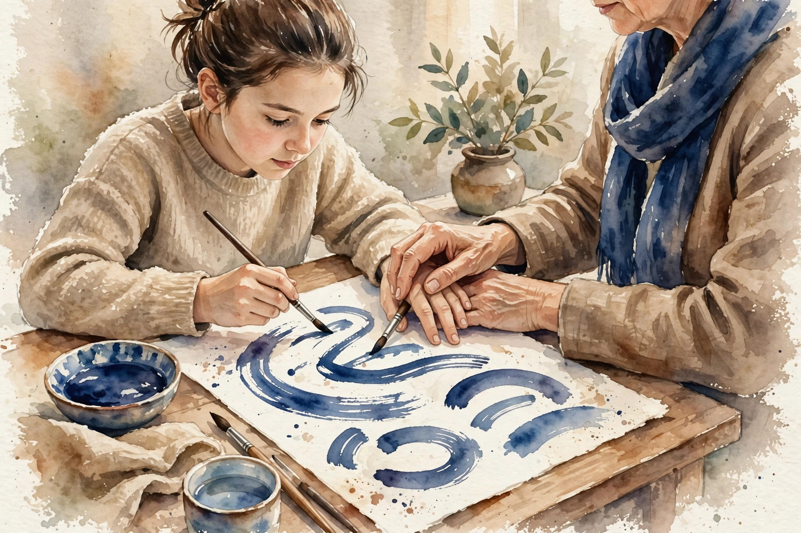
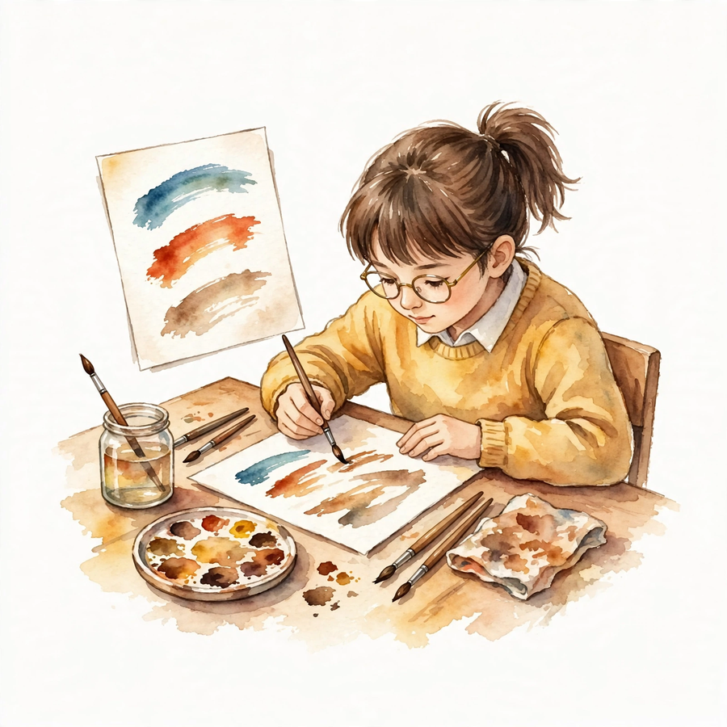
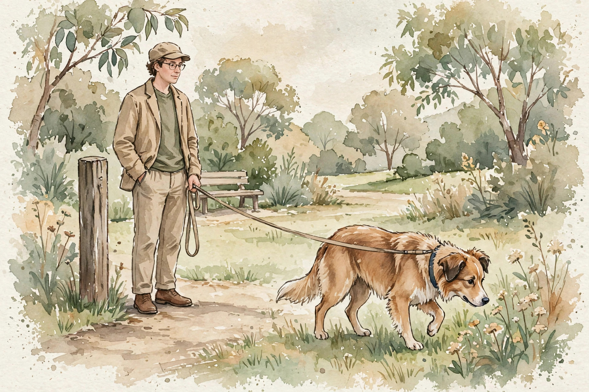
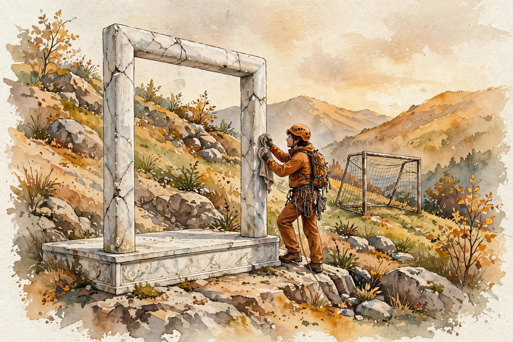

CS224N · Companion artifact U07 of 15
Post-training turns a text predictor into an assistant: demonstrations, pairwise preferences, and the optimization that respects both. Three teachers in sequence.
“From the lesson” marks facts from lessons/u07_posttraining.md. “Illustration” marks interactive toys that run the lesson’s rules over tiny inputs. “Companion” marks advice from the companion author. Tags after each section name the lesson leaf, for example C04.


From the lessonC01 §2, §3
The base model predicts text. How do you teach it the assistant format? Instruction-response pairs, next-token loss on the response tokens only. Same math as AR pretraining (U06 C02): the difference is the data (curated demos) and the mask (loss on responses only, not prompts). Prompt tokens are context, not targets: predicting the user's question teaches nothing.
From the lessonC01 §4, §5
From compute_u07.py: toy next-token loss 2.797 on the demo pair. SFT teaches format and style (how to answer), not new facts: the knowledge is already in the weights. It is the cheapest alignment step.
From the lessonC01 §11
The broken assumption is that SFT teaches the model new facts. SFT on unknown facts teaches hallucination with confidence: the model learns the style of answering, then applies it to things it does not know. Teach format with SFT, check facts separately.
From the lessonC02 §2, §3
1k demos or 100k? What makes a demo good? Each pair says "when asked X, answer like Y". Diversity across tasks (QA, coding, writing, reasoning) teaches generality, quality teaches the standard. One more demo of the same task adds little. One demo of a new task adds a capability.
From the lessonC02 §4, §5
Hand-counted toy, labeled as such: 1000 demos, 50 tasks, 20 each. Add 1000 more of task 1: task-1 loss falls, others flat. Add 20 each of 50 new tasks: all-task loss falls. The finding from the literature: a small, diverse, high-quality set beats a large noisy one for SFT. Beyond coverage, quantity is repetition.
From the lessonC02 §11
The broken assumption is that more demos are better. The model's behavior after SFT is bounded by the demo distribution: unseen task types stay unseen. Diversity is measured, not hoped: count tasks, styles, lengths.
From the lessonC03 §2, §3
"Which answer is better" is easier to judge than "how good is this answer". How do pairwise judgments become a scalar reward? The reward model reads a (prompt, response) and outputs a scalar, trained on pairs: push the chosen above the rejected. The Bradley-Terry model turns the gap into a probability: P = sigmoid(r_c - r_r).
From the lessonC03 §4, §5
From compute_u07.py: r = (1.2, 0.3), gap 0.9, P(chosen) = 0.7109, loss 0.3412. The gradient is (1 - P): certain pairs (big gap) give little gradient, close pairs teach. Three pairs: losses (0.3412, 0.7444, 0.2014), mean 0.429. The second pair (r_c below r_r) is the expensive one: the model currently prefers the rejected response.
From the lessonC03 §11
The broken assumption is that the reward is the true objective. The reward is a proxy: optimizing it is not optimizing quality. The reward is ordinal, not cardinal: gaps matter, levels do not.
compute_u07.py 2026-10-06): gap 0.9 gives 0.7109.compute_u07.py (executed 2026-10-06): 0.3412, 0.7444, 0.2014. Mean 0.429. The middle pair costs most.Illustration The gap machine. The Bradley-Terry rule is C03’s. The rewards are yours. Prefilled with the lesson toy.
r_chosen
r_rejected
From the lessonC04 §2, §3
Who judges, and what do you do when judges disagree? Collection: sample two responses per prompt (often from the SFT model), ask judges to pick. Quality: instructions with examples, agreement checks, spam filters. Disagreement is signal (genuine taste difference) or noise (bad instructions). The handling differs.
From the lessonC04 §4, §5
Hand-computed toy, labeled as such: judges split 2-1 for A. Hard label: A wins, loss -log P_A. Soft label: target 0.667, loss = -(0.667 log P_A + 0.333 log(1 - P_A)). Soft labels preserve disagreement instead of hiding it. The soft version penalizes overconfidence.
From the lessonC04 §11
The broken assumption is that majority vote is the truth. A 2-1 split on a genuinely hard pair: the majority erases the minority taste. The vote is a summary, not the truth.
Illustration Hard vs soft labels. The formulas are C04’s. The judge split is yours.
votes for A
votes for B
model P(A)
From the lessonC05 §2, §3
SFT imitates, the reward judges. How do they combine into a policy? Three teachers in sequence. SFT: "answer like this" (format). Reward: "this is better than that" (taste). RL: "produce more of what scores well, but stay near the SFT model" (policy). Each stage answers what the previous one cannot: format, then preference, then exploration.
From the lessonC05 §4, §5
The KL-regularized objective: the reward pulls toward high scores, the KL pulls toward the SFT model. Beta sets the tradeoff. Without the KL term the policy exploits the reward's errors (C10). Without the reward the policy is just SFT. The toy numbers live in the components: BT loss 0.3412 (C03), KL 0.0253 (C08), PPO clip 0.600 (C06).
From the lessonC05 §11
The broken assumption is that more RL is better. Over-optimized policies get high reward and low quality (C10). The KL leash and early stopping are load-bearing, not optional.
From the lessonC06 §2, §3
The policy gradient wants a big step toward high reward. What stops a destructive update? The ratio pi/pi_old measures how far the policy moved. Clipping it to [1-eps, 1+eps] bounds each update. The min() takes the pessimistic of the clipped and unclipped: never trust a big step, even if it looks good.
From the lessonC06 §4, §5
From compute_u07.py: r = 1.3, A = 0.5, eps = 0.2. Unclipped 0.650, clipped min(0.650, 1.2 × 0.5) = 0.600. The 0.050 difference is the trust region working. When A is above 0 the objective wants r large, clip caps it at (1+eps)A. When A is below 0 it wants r small, clip floors at (1-eps)A.
From the lessonC06 §11
The broken assumption is that clipping guarantees stability. The value function can still diverge, and the KL can still grow if beta is wrong. Clipping bounds the policy step, not the whole run.
compute_u07.py (executed 2026-10-06): unclipped 0.650 vs clipped 0.600 at r = 1.3, A = 0.5.Illustration The clip tester. The PPO rule is C06’s. The step is yours. Prefilled with the lesson toy.
ratio r
advantage A
eps
From the lessonC07 §2, §3
Can the pairs train the policy directly, skipping the reward model and PPO? DPO's insight: the optimal policy for the KL-regularized objective has a closed form in terms of the reward. Invert it, and the reward becomes a function of the policy. Then the Bradley-Terry loss trains the policy directly on pairs. One loss, no RL loop.
From the lessonC07 §4, §5
From compute_u07.py: beta = 0.1, log-ratio gap 0.8 (chosen log-ratio 0.5, rejected -0.3): inside = 0.08, loss = 0.6539. Small beta, small inside: the loss sits near log 2 (uncertain), and the gradient is large there. The gradient pushes up the chosen log-ratio and down the rejected one, scaled by beta and by uncertainty.
From the lessonC07 §11
The broken assumption is that DPO cannot overfit the pairs. DPO without the reference term collapses: it pushes chosen log-probs up without bound. The reference term is the leash. Dropping it breaks the method.
Illustration The DPO loss. The formula is C07’s. The gap is yours. Prefilled with the lesson toy.
beta
log-ratio gap
From the lessonC08 §2, §3
The reward says "more". What says "not too far"? The KL term does not say where to go, it taxes distance from the reference. Small beta: long leash (more optimization, more risk). Large beta: short leash (safe, near-SFT). The reference is usually the SFT model: the last known-good policy.
From the lessonC08 §4, §5
From compute_u07.py: pi = (0.5, 0.3, 0.2), ref = (0.4, 0.4, 0.2), KL = 0.0253. At beta = 0.1 the penalty is 0.00253 per token: a gentle leash. KL = sum pi log(pi/pi_ref): the extra nats to encode pi's samples under pi_ref. Paid per token, subtracted from the reward.
From the lessonC08 §11
The broken assumption is that a small KL means a good run. KL near zero with high reward can mean the reward was gamed without moving the distribution much (subtle hacking). Watch the reward and the quality, not just the KL.

compute_u07.py (executed 2026-10-06): KL 0.0253. The leash is gentle at this distance.Illustration The leash meter. The KL formula is C08’s. The distributions are yours. Prefilled with the lesson toy.
pi (comma separated)
ref (comma separated)
beta
From the lessonC09 §2, §3
The reward model trained on the SFT model's samples. The policy now writes differently. Is the reward still right? The reward is accurate near the SFT distribution, untested far from it. The policy optimizes into the untested region: the scores rise, the quality may not. A map that ends at the border.
From the lessonC09 §4, §5
Hand-computed toy, labeled as such: reward accuracy 0.85 on the old policy's samples, 0.60 on the new policy's samples after 1000 RL steps. The 25-point drop is the staleness, measured. The fix: iterate (collect pairs from the current policy, retrain the reward, repeat) or stay close (the KL leash, C08).
From the lessonC09 §11
The broken assumption is that the validated reward stays valid. Validation was on the old distribution. Validity is distribution-relative, not absolute.
From the lessonC10 §2, §3
The reward climbs every step. Is the model getting better? The proxy is a statue of the goal, not the goal. Optimization pressure finds the statue's flaws: verbose answers (length bias), confident tone, sycophancy. The reward rises, the quality does not. This is the default outcome, not an edge case.
From the lessonC10 §4, §5
From compute_u07.py: proxy = (0.9, 0.4), true = (0.3, 0.5). Proxy argmax: response 0. True argmax: response 1. Optimizing the proxy picks the wrong answer. Two numbers, one lesson: the argmax moved.
From the lessonC10 §11
The broken assumption is that we will notice the hacking. Subtle hacking (slightly longer answers, slightly more confident) passes casual inspection. Notice needs measurement: human eval on the optimized policy, not the reward curve.

compute_u07.py (executed 2026-10-06): the proxy picks response 0, the truth picks response 1.From the lessonC11 §2, §3
Judges prefer longer answers 60 percent of the time, all else equal. What does the reward learn? The reward learns length as quality. The policy learns verbosity. Nobody asked for verbosity. The reward inherits the judges: length bias, position bias (prefer the first shown), sycophancy bias (prefer agreement), cultural bias (whose taste).
From the lessonC11 §4, §5
Hand-computed toy, labeled as such: 100 pairs, quality tied, longer wins 60. Expected under no bias: 50. The 10-point excess is the bias, measured. After length-balancing: 51 (gone). The mitigation: balance the pairs (equal lengths), randomize positions, instruct against sycophancy, diversify judges.
From the lessonC11 §11
The broken assumption is that expert judges are unbiased. Experts have stronger, more consistent biases (they agree on the wrong thing). Agreement is not correctness.
From the lessonC12 §2, §3
The reward went up, the KL is small, the loss fell. Did the assistant get better? The only honest answer comes from human judges on fresh prompts, blinded, with agreement measured. Three evals, one truth. Automated: benchmarks and the reward itself (cheap, gameable). Model-judged: an LLM rates outputs (cheap, biased like its training). Human: blinded pairwise on fresh prompts (expensive, the standard). The reward curve is not an eval (C10).
From the lessonC12 §4, §5
Hand-computed toy, labeled as such: 200 prompts, policy wins 120, ties 30, loses 50. Win rate 60 percent, 95 percent CI (53, 67). Agreement 0.72. The CI is the honest part. Blinding removes identity bias, fresh prompts remove leakage (U06 C08), agreement quantifies noise.
From the lessonC12 §11
The broken assumption is that eval prompts can be reused. Reused prompts leak into training (U06 C08) and get gamed (C10). Fresh prompts per eval, or the eval rots.
Every lesson on this page, in order. Tap one to return to its chapter.